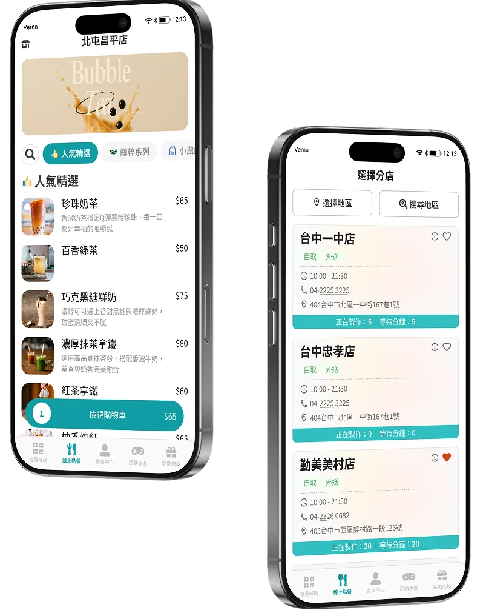
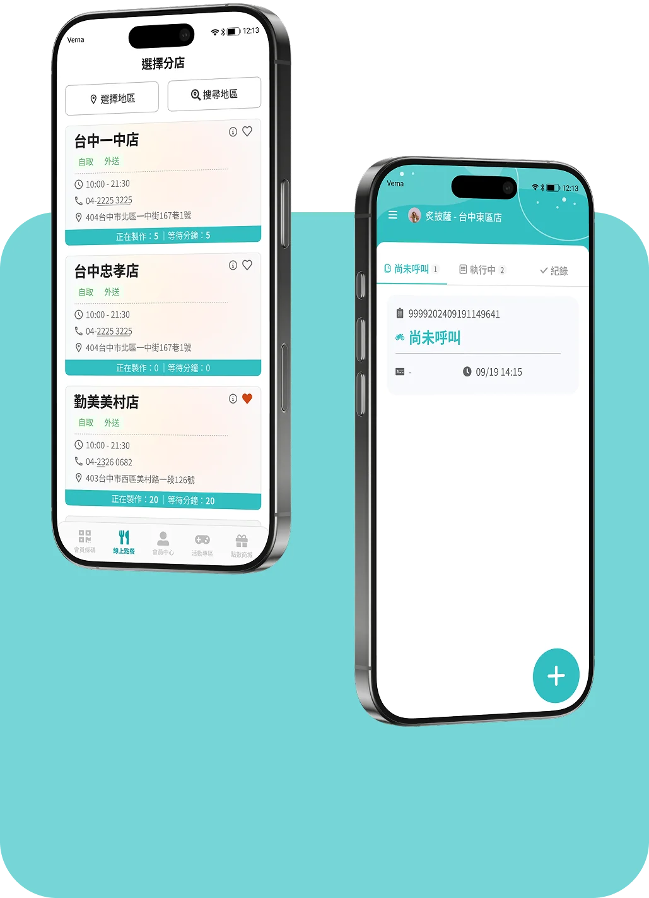
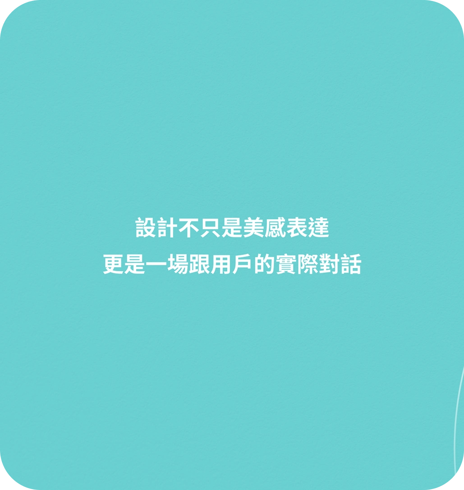
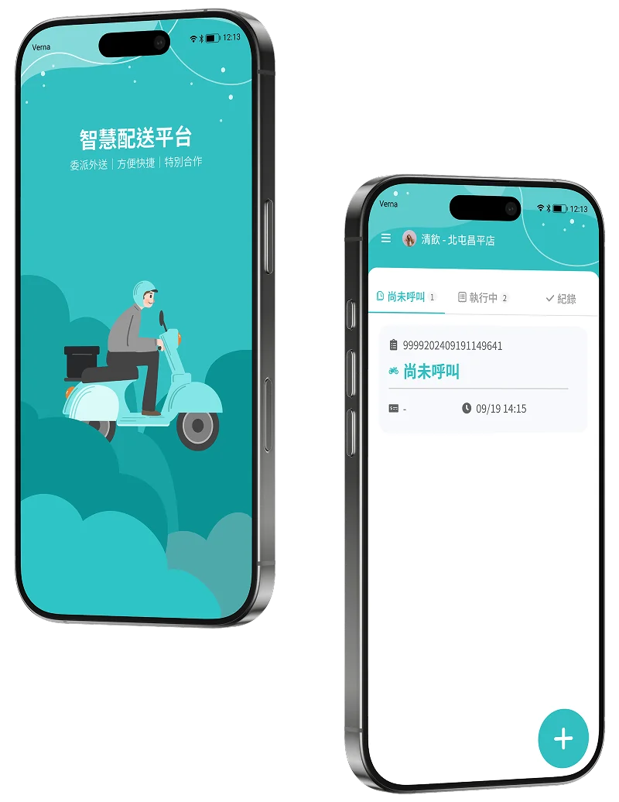

線上點餐
突顯使用者體驗的流暢與即時性

- 01資訊架構優化 — 整合餐點分類、搜尋與門市資訊，提升內容可尋性
- 02點餐流程簡化 — 重新梳理選品至結帳流程，降低操作負擔
- 03狀態回饋明確化 — 透過即時狀態與視覺層級，提升訂單資訊辨識效率
線上點餐 與 智慧配送

About
具備多項 B2C 與後台系統設計經驗，參與線上點餐、智慧配送、菜單管理、POS、BI 與發票平台等產品。擅長從需求釐清、User Flow、UI Design，將複雜業務流程轉化為清楚且具一致性的操作體驗。設計上重視可用性、資訊層級與操作效率，並持續在使用情境與商業需求之間取得平衡。
Core Design Strengths
梳理使用者流程，把畫面一步步引導不繞路，把複雜的事變簡單。
與 PM、工程師持續對齊需求與實作限制，讓設計兼顧體驗與落地可行性。
想像「如果我是店員/顧客，這畫面我會怎麼用?」讓設計更貼地、更有溫度。

突顯使用者體驗的流暢與即時性

節省人力、提升流程，讓門市專注於最重要的顧客服務
